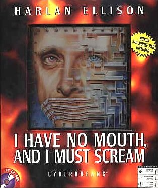
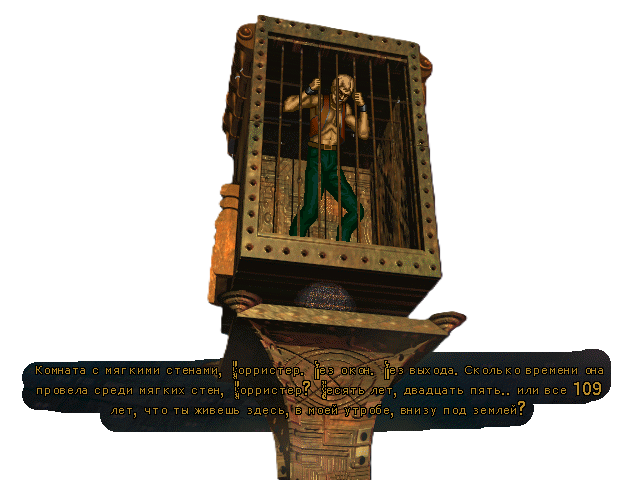
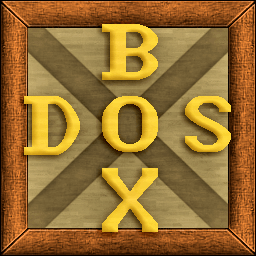

<Компьютерная игра в жанре графического квеста, основанная на одноимённом рассказе Харлана Эллисона, опубликованном в 1967 году. Игра старая, выпущена была для ПК на оперционной системе MSdos.


Чтобы запустить игру сейчас на ПК, нужно скачать эмулятор DosBox. И ещё скачать файлы игры MSdos, на сайте Old-Games.RU И в папке игры открыть папку Games, и потом в этой папке открыть папку Scream и пакет установщик Scream это открыть через эмулятор.